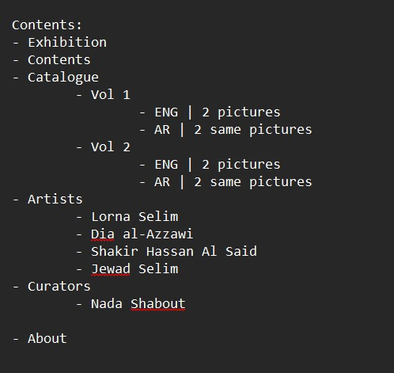
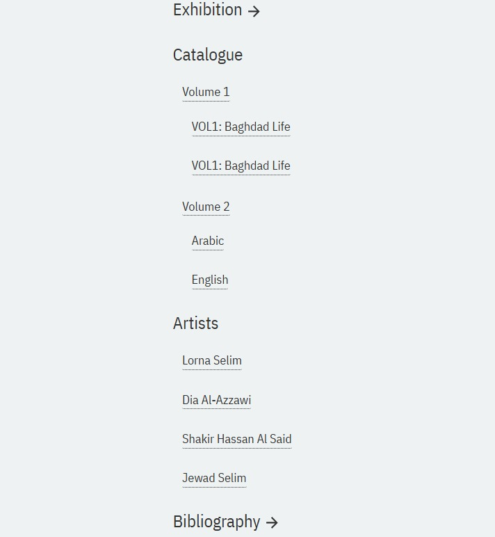
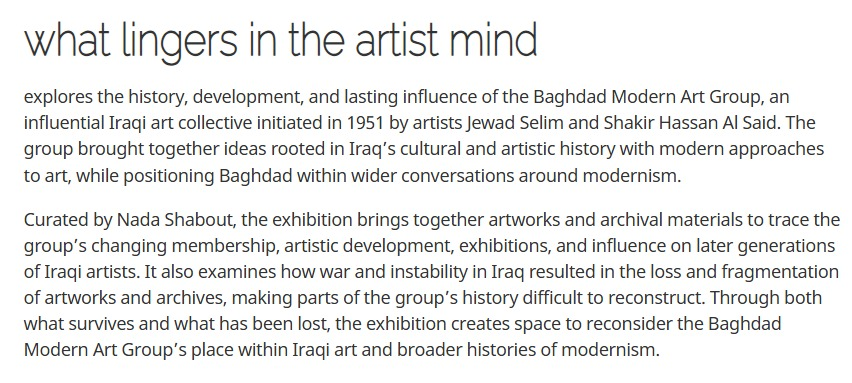
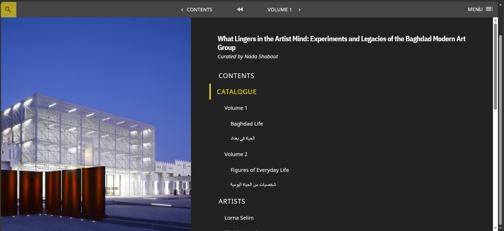
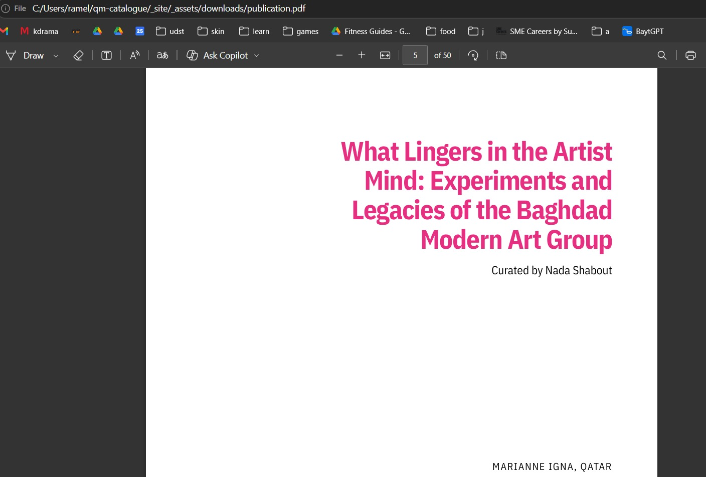
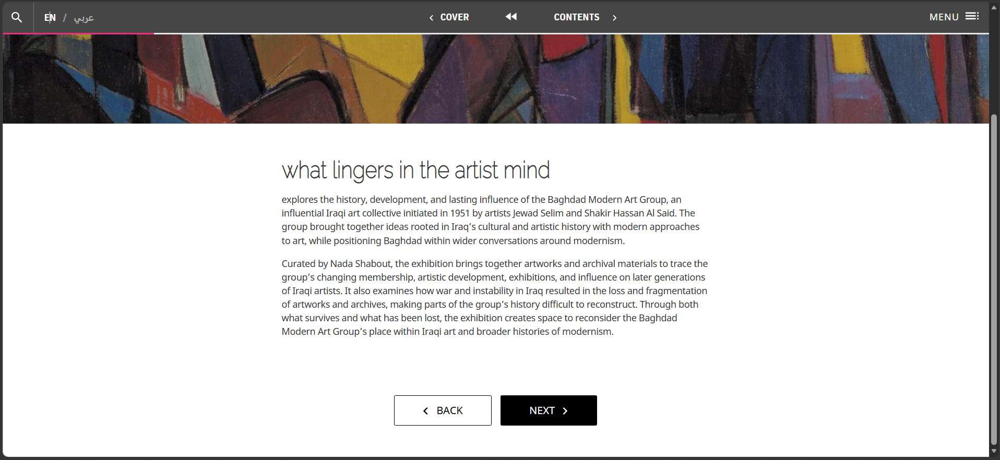

Online Publication: View the completed Quire catalogue
Sunday: I started the week by downloading and setting up Quire, but I encountered an issue because I had missed one of the installation steps. After fixing the problem, I created a new Quire project called qm-catalogue. I then started collecting the images and other materials I would need for the catalogue. I also worked on the index page and began creating the overall layout and structure I wanted for the publication.

Monday: I continued building the overall layout of the catalogue in VS Code before focusing on the main content. Once the structure was ready, I started working on the catalogue pages for Volume 1 and Volume 2. I added both the English and Arabic versions of the content so the publication could support two languages. I also worked on the About page and organized its content within the catalogue.

Tuesday: I focused on creating the individual artist pages and the curator page. I added more figures to show examples of the artists' works and organized them alongside their information. I also included relevant YouTube links to provide additional material about the artists. This helped make the artist sections more informative and visually complete.
Wednesday: I started doing the layout and the css. I took inspiration with the Qatar Musuem and Mathaf with their Menu button, capitalization of their title words, and buttons. I changed the colors as well. I decided to create a language button, so if the user selects arabic it will only show arabic. With that, I changed the javascript and customized the markdown pages again.


Wednesday: I focused more on the visual design and CSS of the catalogue, taking inspiration from Qatar Museums and Mathaf. I experimented with elements such as the menu button, capitalization of titles, buttons, spacing, and the overall color palette. I also created a language switcher so users could choose between English and Arabic without seeing both languages at the same time. To make this work, I customized the JavaScript and updated the Markdown pages to properly separate the English and Arabic content.
Thursday: I continued updating the remaining Markdown pages that needed Arabic content and then worked on the online, PDF, and EPUB versions of the publication. During the online deployment, I encountered an issue where both English and Arabic appeared together even though the language switcher worked correctly in the Quire preview. After troubleshooting the deployment and JavaScript files, I was able to get the language switcher working properly on the online publication. I also encountered problems with the EPUB, where the images and styling were initially missing, but I was able to restore the images after fixing the asset paths. The EPUB styling still needed further adjustments, so I used a temporary simplified approach while continuing to test the output.

